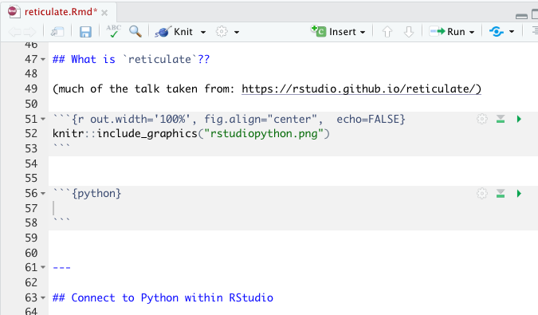
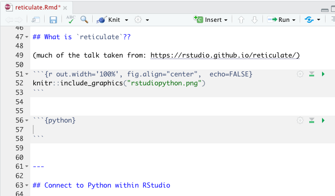

10 Misc
10.1 11/26/19 Agenda
- API / authenticating
- parallel computing
- cloud computing
-
reticulate(Python in R!) - SQL
10.2 API

Figure 1.2: xkcd, https://xkcd.com/1481/
What is an API? (Application Programming Interface)
Think of an API as a restaurant menu. The menu provides a list of what the restaurant has to offer, and you order off the menu by choosing the dish that you want. After you order, the restaurant figures out how to bring the food from the kitchen to your table in the way that you’ve specified.
An API is an intermediary that allows two applications to talk to one another. It is not the database or the server, instead it is the code that allows communication.
Examples of APIs
When you use an app on your phone, the app connects to the internet and sends information to a server somewhere. The server retrieves the data, interprets it, does what it does, and sends it back to you. The application which takes the data from the server and presents it to you in a readable way is an API.
Let’s say you are booking a flight on United. You choose all the details, you interact with the airline’s website. BUT INSTEAD, what if you are interacting with a software like Expedia? Then Expedia has to talk to United’s API to get all the information about available flights, costs, seats, etc.
If you’ve ever been to a third party site and clicked on “Share on Facebook” or “Share on Twitter” your third party site is communicating with the Facebook API or the Twitter API.
You sign up to go to a concert, and StubHub asks whether you want to add the concert to your Google calendar. StubHub needs to talk to Google via Google’s API.
What if you want some Twitter data? How might you get it? Well, you could email Twitter and ask someone for it. Instead Twitter provides information about how their data is stored, and allows you to query their data in an automated way.

Figure 1.3: Image taken from https://rigor.com/blog/what-is-an-api-a-brief-intro
10.2.1 Authenticating
- Authenticating is stating who you are
- Authorization is asking for access to a resources (and happens after authentication)
DO NOT post your credentials and keys to a public GitHub repo!!
In almost all cases, in order to communicate with an API, you must tell the API who you are and that you should have access to the information the API is providing.

Figure 1.4: Image taken from https://blog.restcase.com/restful-api-authentication-basics/
10.3 Parallel Computing
(Taken from the Teach Data Science blog: https://teachdatascience.com/parallel/)
To demonstrate what parallel computing is, we’ll perform tasks that are embarrassingly parallel which means there is no dependency or communication between the parallel tasks. Again, parallel computing can be powerful in ways that link computational tasks in complicated ways. But we believe that as a first pass at teaching parallel computing, we should teach the parallel structure before bringing in dependence across the parallel tasks. Examples of embarrassingly parallel algorithms include: Monte Carlo analysis, bootstrapping, growing trees for Random Forests, group_by analyses, and cross-validation. Additionally, data science methods increasingly use randomized algorithms which can often be written in parallel.
Indeed, it isn’t always easy to know when to use a parallel construction. Because of existing overhead processes (e.g., copying data across many threads, bring results together, etc.) an algorithm run on 10 parallel strands will not reduce an original (non-parallel) run time by 10-fold. Figuring out when a parallel implementation is appropriate is beyond the scope of this blog but should be carefully considered before embarking on large projects.
Some parallel examples
Before running code in parallel, it is valuable to know how many cores your computer has to work with. Note that the detectCores function will provide information about the specific device you are using (logical = FALSE tells you only the physical cores which is likely what you want). Note that after makeCluster the separate threads have information. [The argument setup_strategy = "sequential" is a fix for working with R 4.0+.] After stopCluster, the code is no longer connecting to the cluster structure.
library(parallel)
P <- detectCores(logical=FALSE)
P## [1] 8
cl <- makeCluster(P, setup_strategy = "sequential")
cl[[1]]## node of a socket cluster on host 'localhost' with pid 63124
stopCluster(cl)
cl[[1]]## Error in summary.connection(connection): invalid connectionEmbarrassingly embarrassing example
In the example below, we generate some Cauchy data and find the max of each sample. Note that for the current device there are 8 cores, so the process will happen 100/P = 12.5 times on each core. The second argument of clusterApply is a sequence of numbers that gets passed to each worker as the (first) argument of func1. Below, I’ve specified that the value 50 (number of reps) should be passed separately to 100 different workers.
W <- 100
P <- parallel::detectCores(logical=FALSE)
cl <- parallel::makeCluster(P, setup_strategy = "sequential")
func1 <- function(reps){
max(rcauchy(reps))
}
clusterApply(cl, rep(50,W), fun = func1) %>% head(3)## [[1]]
## [1] 4.973585
##
## [[2]]
## [1] 12.45264
##
## [[3]]
## [1] 27.81546
stopCluster(cl)There are many R functions which implement parallel processing. For example, the same code from above can be processed using foreach.
library(doParallel)
cl <- parallel::makeCluster(P, setup_strategy = "sequential")
doParallel::registerDoParallel(cl)
foreach(reps = rep(50, 100), .combine = 'c') %dopar% {
max(rcauchy(reps))
} %>% head(3)## [1] 40.43513 15.91192 7042.85346
stopCluster(cl)Example bootstrapping
A slightly less embarrassingly parallel example comes with bootstrapping. Below we have used parallel implementation to bootstrap the mean of the iris data petal length (Virginica only).
cl <- parallel::makeCluster(P, setup_strategy = "sequential")
doParallel::registerDoParallel(cl)
bsmean_PL <- foreach(i = 1:100, .combine = 'c') %dopar% {
mean(sample(iris_bs$Petal.Length, replace = TRUE))
}
bootstrap <- tibble(bsmean_PL)
stopCluster(cl)
ggplot(bootstrap, aes(x = bsmean_PL)) + geom_histogram(bins = 25) + ggtitle("Histogram of 100 Bootstrapped Means using foreach")
10.3.1 Spark and sparklyr
Some of you may be familiar with Apache Spark which is an open-source product for distributed cluster-computing. You may want to learn more about its capabilities, including scheduling workflow, dispatching tasks, and consolidating end results. While incredibly powerful, there has historically been a steep learning curve to getting R to work smoothly with a Spark connection. Recently, RStudio has come out with a new package sparklyr which integrates R and Spark seamlessly. Note that in the example below, we’ve set up a local connection just for the purposes of the example. For your work, you may want to connect to a cluster or cloud space with many cores.
The RStudio sparklyr webpage provides a plethora of good examples demonstrating the sophistication and power of the technology. sparklyr has particularly strong connections to the suite of tidyverse functions. Indeed, the power of sparklyr is more about distributing the computing than about parallelizing it. For example, with sparklyr the computations are delayed until you need the results. Additionally, Spark is doing the heavy lifting and only at the very end (when your results are called) do you need to worry about the size of the table, results, or computational space. The example below repeats the bootstrapping work that was done previously.
Note, it is important to look at your data structures and variables names. For example, when copying the local dataframe iris_samps to the remote data source called iris_samps_tbl, the variable Petal.Length was changed to Petal_Length.
library(sparklyr)
spark_install()
sc <- spark_connect(master = "local")
n_sim = 100
iris_samps <- iris %>% dplyr::filter(Species == "virginica") %>%
sapply(rep.int, times=n_sim) %>% cbind(replicate = rep(1:n_sim, each = 50)) %>%
data.frame() %>%
dplyr::group_by(replicate) %>%
dplyr::sample_n(50, replace = TRUE)
iris_samps_tbl <- copy_to(sc, iris_samps)
iris_samps_tbl %>%
spark_apply(function(x) {mean(x$Petal_Length)},
group_by = "replicate") %>%
ggplot(aes(x = result)) + geom_histogram(bins = 20) + ggtitle("Histogram of 100 Bootstrapped Means using sparklyr")
spark_disconnect(sc)For our particular application, the adept reader has probably noticed that the average of a variable using group_by is a very quick and easy task for dplyr. Indeed, the use of sparklyr above is overkill and is presented only as a way to demonstrate using sparklyr. If you are working with big datasets that require large computing infrastructure, the RStudio help pages on sparklyr are fantastic. Additionally, there are many instances of working with Spark in the wild, and you might consider working through someone else’s Spark analysis like this fantastic example on splitting up large amounts of raw DNA sequencing to get data for a given genetic location.
iris_samps %>% dplyr::group_by(replicate) %>%
dplyr::summarize(result = mean(Petal.Length)) %>%
ggplot(aes(x = result)) + geom_histogram(bins = 25) + ggtitle("Histogram of 100 Bootstrapped Means using dplyr")
While an introduction to parallel and cloud computing will help you become more adept and less apprehensive about using the tools, there is also a recognition that sufficient background in computer science is needed to be able to fully engage with principles of high performance computing.
Learn more
- Hana Sevcikova Introduction to parallel computing with R useR 2017 in Brussels, tutorial here
-
sparklyrto do parallel cross-validation - https://www.rstudio.com/resources/cheatsheets/
- Great blog Two Flavors of Parallel Simulation by Mark LeBoeuf comparing different ways to process code in parallel.
10.4 Cloud Computing
A great overview on high performance computing (HPC) what it is and what it isn’t is given here: https://www.slideshare.net/raamana/high-performance-computing-with-checklist-and-tips-optimal-cluster-usage
](figs/notHPC.png)
Figure 1.8: Image from Pradeep Redddy Raamana High performance computing tutorial, with checklist and tips to optimize cluster usage
(The rest, below, is taken from the Teach Data Science blog: https://teachdatascience.com/cloud2/, this entry written by Nick Horton)
The R package parallel is designed to send tasks to each of multiple cores. Today’s computers (even small laptops!) typically have multiple cores, and any server or cloud computing infrastructure can easily handle dozens or hundreds of parallel tasks. The structure of the R parallel implementation sends tasks to workers that don’t talk to one another until compiling their results at the end. In her 2017 UseR! tutorial, Hana Sevcikova describes the function of workers which run code/functions/iterations separately before results are subsequently combined.
](figs/flow.png)
Figure 1.9: Image from Sevcikova UseR! 2017 tutorial on parallel computing
As computing infrastructure becomes more sophisticated, it is important to have the language to describe how connected components work. Parallel processing allows for a conversation on the differences between distributed computing, cluster computing, and grid computing, and generally, the framework of high performance computing. The benefit of parallel computing as an introduction to the larger infrastructure is that the task of each worker is clear, important, and easy to describe.
This discussion is motivated by several recent papers and blog posts that describe how complex, real-world data science computation can be structured in ways that would not have been feasible in past years without herculean efforts. It is worth noting the fantastic example that described multiple iterations needed to parse huge amounts of raw DNA sequencing data to undertake analyses for a given set of genetic locations. In “Ambitious data science can be painless” Monajemi et al. describe workflows that take advantage of new software stacks to undertake massive cloud-based experiments. While a few years older, Chamandy et al.’s Teaching statistics at Google scale described three examples where modern data challenges were overcome with creative statistical thinking (see companion report on Estimating uncertainty for massive data streams ). Finally, the NSF-funded workshop report on “Enabling computer and information science and engineering research and education in the cloud” highlights opportunities as university computing migrates to cloud solutions more and more.
And last, you may enjoy reading the recent Three strategies for working with Big Data in R blog post.
How can we prepare for cloud computing in an undergraduate course?
Getting started
What are the steps to exploring cloud-based systems? Each of the main cloud providers have active educational outreach programs.
Google Compute Platform allows faculty to apply to receive $100 in GCP credits and $50 per student. Credits can be used in courses, student clubs, and other faculty-sponsored events. (To replicate our example later in this blog, you’ll want to set up an account and request credits.)
Azure for Education provides access for educators to open source content for classes and $200 in Azure credits, plus free services.
Amazon Web Services Educate provides between $75 and $200 in AWS annual credits per educator (depending on membership status) and between $30 and $100 for students.
You should sign up and start to explore! The world of cloud computing is quickly changing. By gaining experience through investment in time in learning these tools will help instructors provide guidance to their students in use of these modern computational tools.
An example: BigQuery in Google’s GCP
Consider an example using GCP (kudos to Shukry Zablah for his assistance).
BigQuery is Google’s serverless, highly-scalable, cloud data warehouse. A quickstart document is available which discusses use of the web user interface and the GCP console as well as access through an API interface. The bigrquery package in R makes it easy to work with data stored in Google BigQuery through queries to BigQuery tables.
The first step is to request GCP credits (see above) and use the online interface to create a project (below called “Test Project for Blog”).
projectId <- "bigquery-public-data" # replace with your own project
billingId <- "test-project-for-blog" # replace with your own billing ID
datasetName <- "samples"
tableName <- "wikipedia"BigQuery includes a number of public datasets. Below is an analysis of the public dataset of the revisions of Wikipedia articles up to April 2010, hosted in GCP BigQuery. The size of the table is 35.69GB. The queries take only seconds to run.
query <- "SELECT title, COUNT(title) as n
FROM `bigquery-public-data.samples.wikipedia`
GROUP BY title
ORDER BY n DESC
LIMIT 500"For safety, always try to make sure that your queries have the LIMIT set on your queries.
mostRevisions_tb <-
bigrquery::bq_project_query(x = billingId,
query = query) #creates temporary tableWhen the previous bq_project_query() function is run within RStudio, a connection is made to Google (GCP) and an authentication window will open up in a local browser.
All the heavy lifting we perform is done on the database end (note that we are billed for it, though the first 1TB of accesses are free). The local machine only receives the data once we try to display it. Right now mostRevisions_tb is just a reference to a temporary table online. The query accessed 7GB of data.
We can get a copy of the data on our local machine once we are confident that it is what we want.
mostRevisions <- bq_table_download(mostRevisions_tb)
glimpse(mostRevisions)## Rows: 500
## Columns: 2
## $ title <chr> "Wikipedia:Administrator intervention against vandalism", "Wikip…
## $ n <int> 643271, 419695, 326337, 257893, 226802, 204469, 191679, 186715, …
clean <- mostRevisions %>%
filter(!grepl("Wikipedia|User|Template|Talk", title)) %>%
mutate(title = fct_reorder(title, n)) %>% #to sort levels
glimpse()## Rows: 272
## Columns: 2
## $ title <fct> "George W. Bush", "List of World Wrestling Entertainment employe…
## $ n <int> 43652, 30572, 27433, 23245, 21768, 20814, 20546, 20529, 20225, 2…Let’s plot the top 10 entries.
ggplot(clean %>% head(10), aes(x = title, y = n, fill = n)) +
geom_bar(stat = "identity") +
labs(x = "Article Title",
y = "Number of Revisions",
title = "Most Revised Wikipedia Articles (Up to April 2010)") +
scale_fill_gradient(low = "darkblue", high = "darkred", guide = FALSE) +
theme_minimal() +
theme(axis.text.x = element_text(angle = 20, hjust = 1)) 
We’ve obviously just scratched the surface here. There are lots of other examples out there to consider replicating in your classroom (e.g., returning tweets on a schedule). Hopefully you are intrigued enough to request some credits for you and your students and start to explore. Not sure where to begin? Check out the GCP Essentials Videos series.
10.5 reticulate
(Taken from the Teach Data Science blog: https://teachdatascience.com/reticulate/)
Connect to Python within RStudio
For many statisticians, the go-to software language is R. However, there is no doubt that Python is a very important language in data science. Why not do both??
library(tidyverse)
library(reticulate)
use_virtualenv("r-reticulate")
reticulate::import("statsmodels")## Module(statsmodels)I can run Python inside R??
 

-
pandasfor data wrangling.
- In R, the chunk is specified to be a Python chunk (RStudio is now running Python).
```{python}
import pandas
flights = pandas.read_csv("flights.csv")
flights = flights[flights["dest"] == "ORD"]
flights = flights[['carrier', 'dep_delay', 'arr_delay']]
flights = flights.dropna()
```A view of the Python chunk which is actually run:
import pandas
flights = pandas.read_csv("flights.csv")
flights = flights[flights["dest"] == "ORD"]
flights = flights[['carrier', 'dep_delay', 'arr_delay']]
flights = flights.dropna()Learn about the dataset
```{python}
flights.shape
flights.head(3)
flights.describe()
```flights.shape## (12590, 3)flights.head(3)## carrier dep_delay arr_delay
## 4 UA -4.0 12.0
## 5 AA -2.0 8.0
## 22 AA -1.0 14.0flights.describe()## dep_delay arr_delay
## count 12590.000000 12590.000000
## mean 11.709770 2.917951
## std 39.409704 44.885155
## min -20.000000 -62.000000
## 25% -6.000000 -22.000000
## 50% -2.000000 -10.000000
## 75% 9.000000 10.000000
## max 466.000000 448.000000Computations using pandas
```{python}
flights = pandas.read_csv("flights.csv")
flights = flights[['carrier', 'dep_delay', 'arr_delay']]
flights.groupby("carrier").mean()
```flights = pandas.read_csv("flights.csv")
flights = flights[['carrier', 'dep_delay', 'arr_delay']]
flights.groupby("carrier").mean()## dep_delay arr_delay
## carrier
## AA 8.586016 0.364291
## AS 5.804775 -9.930889
## DL 9.264505 1.644341
## UA 12.106073 3.558011
## US 3.782418 2.129595From Python chunk to R chunk
-
py$xaccesses anxvariable created within Python from R -
r.xaccesses anxvariable created within R from Python
library(ggplot2)
ggplot(py$flights,
aes(x=carrier,
y=arr_delay)) +
geom_point() +
geom_jitter()From R chunk to Python chunk
## # A tibble: 6 × 10
## carat cut color clarity depth table price x y z
## <dbl> <ord> <ord> <ord> <dbl> <dbl> <int> <dbl> <dbl> <dbl>
## 1 0.23 Ideal E SI2 61.5 55 326 3.95 3.98 2.43
## 2 0.21 Premium E SI1 59.8 61 326 3.89 3.84 2.31
## 3 0.23 Good E VS1 56.9 65 327 4.05 4.07 2.31
## 4 0.29 Premium I VS2 62.4 58 334 4.2 4.23 2.63
## 5 0.31 Good J SI2 63.3 58 335 4.34 4.35 2.75
## 6 0.24 Very Good J VVS2 62.8 57 336 3.94 3.96 2.48Python chunks
Note that we’re calling Python code on an R object.
print(r.diamonds.describe())## carat depth ... y z
## count 53940.000000 53940.000000 ... 53940.000000 53940.000000
## mean 0.797940 61.749405 ... 5.734526 3.538734
## std 0.474011 1.432621 ... 1.142135 0.705699
## min 0.200000 43.000000 ... 0.000000 0.000000
## 25% 0.400000 61.000000 ... 4.720000 2.910000
## 50% 0.700000 61.800000 ... 5.710000 3.530000
## 75% 1.040000 62.500000 ... 6.540000 4.040000
## max 5.010000 79.000000 ... 58.900000 31.800000
##
## [8 rows x 7 columns]import statsmodels.formula.api as smf
model = smf.ols('price ~ carat', data = r.diamonds).fit()
print(model.summary())## OLS Regression Results
## ==============================================================================
## Dep. Variable: price R-squared: 0.849
## Model: OLS Adj. R-squared: 0.849
## Method: Least Squares F-statistic: 3.041e+05
## Date: Mon, 08 Nov 2021 Prob (F-statistic): 0.00
## Time: 05:39:52 Log-Likelihood: -4.7273e+05
## No. Observations: 53940 AIC: 9.455e+05
## Df Residuals: 53938 BIC: 9.455e+05
## Df Model: 1
## Covariance Type: nonrobust
## ==============================================================================
## coef std err t P>|t| [0.025 0.975]
## ------------------------------------------------------------------------------
## Intercept -2256.3606 13.055 -172.830 0.000 -2281.949 -2230.772
## carat 7756.4256 14.067 551.408 0.000 7728.855 7783.996
## ==============================================================================
## Omnibus: 14025.341 Durbin-Watson: 0.986
## Prob(Omnibus): 0.000 Jarque-Bera (JB): 153030.525
## Skew: 0.939 Prob(JB): 0.00
## Kurtosis: 11.035 Cond. No. 3.65
## ==============================================================================
##
## Warnings:
## [1] Standard Errors assume that the covariance matrix of the errors is correctly specified.
10.6 SQL (in R)
Note that there exists an R interface to work with SQL commands from within an R Markdown file. For consistency with the class notes, we’ve continued to use the R Markdown structure to demonstrate the course material.
(Taken from the Teach Data Science blog: https://teachdatascience.com/sql/, this entry written by Nick Horton)
SQL (pronounced sequel) stands for Structured Query Language; it is a language designed to manage data in a relational database system.
We will use a public facing MySQL database containing wideband acoustic immittance (WAI) measures made on normal ears of adults. (The project is funded by the National Institutes of Health, NIDCD, and hosted on a server at Smith College, PI Susan Voss, R15 DC014129-01.) The database was created to enable auditory researchers to share WAI measurements and combine analyses over multiple datasets.
We begin by demonstrating how SQL queries can be sent to a database. It is necessary to set up a connection using the dbConnect() function.
library(mosaic)
library(RMySQL)
con <- dbConnect(
RMySQL::MySQL(), host = "scidb.smith.edu", user = "waiuser",
password = "smith_waiDB", dbname = "wai")Next a series of SQL queries can be sent to the database using the DBI::dbGetQuery() function: each query returns an R dataframe.
class(dbGetQuery(con, "SHOW TABLES"))There are multiple tables within the wai database.
dbGetQuery(con, "SHOW TABLES")The EXPLAIN command describes the ten field names (variables) in the PI_Info table.
dbGetQuery(con, "EXPLAIN PI_Info")The SELECT statement can be used to select all fields for eight observations in the Measurements table.
eightobs <- dbGetQuery(con, "SELECT * FROM Measurements LIMIT 8")
eightobsMore interesting and complicated SELECT calls can be used to undertake grouping and aggregation. Here we calculate the sample size for each study
dbGetQuery(con,
"SELECT Identifier, count(*) AS NUM FROM Measurements GROUP BY Identifier ORDER BY NUM")Accessing a database using dplyr commands
Alternatively, a connection can be made to the server by creating a series of dplyr tbl
objects. Connecting with familiar dplyr syntax is attractive because, as Hadley Wickham has noted, SQL and R have similar syntax (but sufficiently different to be confusing).
The setup process looks similar.
Measurements <- tbl(con, "Measurements")
class(Measurements)
PI_Info <- tbl(con, "PI_Info")
Subject <- tbl(con, "Subjects")We explore the PI_Info table using the collect() function used to force computation on the database (and return the results). One attractive aspect of database systems is that they feature lazy evaluation, where computation is optimized and postponed as long as possible.
PI_Info %>% collect() %>% data.frame()
# be careful with collect() when dealing with large tables!Note how the number of rows is unknown (?? at the top of the output above) for the lazy query.
Similarly, we can explore the Subjects table.
#Subject %>% summarise(total = n())
Subject %>% collect() # be careful with collect() with large tables!Let’s explore the Measurements table.
There are more than a quarter million observations.
In the next step, we will download the data from a given subject for a specific study, in this case a paper by Rosowski et al. (2012) entitled “Ear-canal reflectance, umbo velocity, and tympanometry in normal-hearing adults”.
Arbitrarily we choose to collect data from subject number three.
onesubj <-
Measurements %>%
filter(Identifier == "Rosowski_2012", Sub_Number == 3) %>%
collect %>%
mutate(SessionNum = as.factor(Session))
head(onesubj)Finally we can display the results of the measurements as a function of frequency and which ear (left or right) that was used.
onesubj <- mutate(onesubj, Ear = ifelse(Left_Ear == 1, "Left", "Right"))
ggplot(onesubj, aes(x = Freq, y = Absorbance)) + geom_point() +
aes(colour = Ear) + scale_x_log10() + labs(title="Absorbance by ear Rosowski subject 3")Always a good idea to terminate the SQL connection.
dbDisconnect(con)We note that a number of relational database systems exist, including MySQL (illustrated here), PostgreSQL, and SQLite. More information about databases within R can be found in the CRAN Databases with R Task View.
Setting up and managing a database is a topic for a different day: here we focused on how SQL can be used within R to access data in a flexible and powerful manner.
Learn more
- https://chance.amstat.org/2015/04/setting-the-stage/ (Setting the stage for data technologies)
- https://www.w3schools.com/sql/sql_intro.asp (Intro to SQL)
- http://www.science.smith.edu/wai-database/home/about/ (WAI SQL Database)
- https://cran.r-project.org/web/views/Databases.html (CRAN Task View on Databases with R)
- https://db.rstudio.com (RStudio Database resources)
- https://dbplyr.tidyverse.org/articles/dbplyr.html (dbplyr package)
10.7 Regular Expressions
A regular expression … is a sequence of characters that define a search pattern. Usually such patterns are used by string searching algorithms for “find” or “find and replace” operations on strings, or for input validation. It is a technique developed in theoretical computer science and formal language theory. [From https://en.wikipedia.org/wiki/Regular_expression]
Main tasks in character matching:
- basic string operations
- pattern matching (regular expressions)
- sentiment analysis
The ideas below are mostly taken from Jenny Bryan’s STAT545 class: https://github.com/STAT545-UBC/STAT545-UBC-original-website/blob/master/block022_regular-expression.rmd
R packages to make your life easier
-
stringrpackage A core package in thetidyverse. It is installed viainstall.packages("tidyverse")and also loaded vialibrary(tidyverse). Of course, you can also install or load it individually.- Many of the main functions start with
str_. Auto-complete is your friend. - Replacements for base functions re: string manipulation and regular expressions (see below).
- Main advantages over base functions: greater consistency about inputs and outputs. Outputs are more ready for your next analytical task.
-
stringrcheat sheet: https://github.com/rstudio/cheatsheets/raw/master/strings.pdf
- Many of the main functions start with
-
tidyrpackage Especially useful for functions that split one character vector into many and vice versa:separate(),unite(),extract(). - Base functions:
nchar(),strsplit(),substr(),paste(),paste0(). - The
gluepackage is fantastic for string interpolation. Ifstringr::str_interp()doesn’t get your job done, check out thegluepackage.
Escape sequences
There are some special characters in R that cannot be directly coded in a string. For example, let’s say you specify your pattern with single quotes and you want to find countries with the single quote '. You would have to “escape” the single quote in the pattern, by preceding it with \, so it is clear that it is not part of the string-specifying machinery.
There are other characters in R that require escaping, and this rule applies to all string functions in R, including regular expressions. See here for a complete list of R escape sequences.
-
\': single quote. You don’t need to escape single quote inside a double-quoted string, so we can also use"'"in the previous example.
-
\": double quote. Similarly, double quotes can be used inside a single-quoted string, i.e.'"'.
-
\n: newline.
-
\r: carriage return.
-
\t: tab character.
Note:
cat()andprint()handle escape sequences differently, if you want to print a string out with these sequences interpreted, usecat().
print("a\nb")## [1] "a\nb"
cat("a\nb")## a
## bQuantifiers
Quantifiers specify how many repetitions of the pattern.
-
*: matches at least 0 times.
-
+: matches at least 1 times.
-
?: matches at most 1 times.
-
{n}: matches exactly n times.
-
{n,}: matches at least n times.
-
{n,m}: matches between n and m times.
(strings <- c("a", "ab", "acb", "accb", "acccb", "accccb"))## [1] "a" "ab" "acb" "accb" "acccb" "accccb"
grep("ac*b", strings, value = TRUE)## [1] "ab" "acb" "accb" "acccb" "accccb"
grep("ac*b", strings, value = FALSE)## [1] 2 3 4 5 6
grep("ac+b", strings, value = TRUE)## [1] "acb" "accb" "acccb" "accccb"
grep("ac?b", strings, value = TRUE)## [1] "ab" "acb"
grep("ac{2}b", strings, value = TRUE)## [1] "accb"
grep("ac{2}b", strings, value = FALSE)## [1] 4
grep("ac{2,}b", strings, value = TRUE)## [1] "accb" "acccb" "accccb"
grep("ac{2,3}b", strings, value = TRUE)## [1] "accb" "acccb"Position of pattern within the string
-
^: matches the start of the string.
-
$: matches the end of the string.
-
\b: matches the empty string at either edge of a word. Don’t confuse it with^ $which marks the edge of a string.
-
\B: matches the empty string provided it is not at an edge of a word.
(strings <- c("abcd", "cdab", "cabd", "c abd"))## [1] "abcd" "cdab" "cabd" "c abd"
grep("ab", strings, value = TRUE)## [1] "abcd" "cdab" "cabd" "c abd"
grep("^ab", strings, value = TRUE)## [1] "abcd"
grep("ab$", strings, value = TRUE)## [1] "cdab"
grep("\\bab", strings, value = TRUE)## [1] "abcd" "c abd"Operators
-
.: matches any single character, as shown in the first example. -
[...]: a character list, matches any one of the characters inside the square brackets. We can also use-inside the brackets to specify a range of characters.
-
[^...]: an inverted character list, similar to[...], but matches any characters except those inside the square brackets.
-
\: suppress the special meaning of metacharacters in regular expression, i.e.$ * + . ? [ ] ^ { } | ( ) \, similar to its usage in escape sequences. Since\itself needs to be escaped in R, we need to escape these metacharacters with double backslash like\\$.
-
|: an “or” operator, matches patterns on either side of the|.
-
(...): grouping in regular expressions. This allows you to retrieve the bits that matched various parts of your regular expression so you can alter them or use them for building up a new string. Each group can than be refer using\\N, with N being the No. of(...)used. This is called backreference.
(strings <- c("^ab", "ab", "abc", "abd", "abe", "ab 12"))## [1] "^ab" "ab" "abc" "abd" "abe" "ab 12"
grep("ab.", strings, value = TRUE)## [1] "abc" "abd" "abe" "ab 12"
grep("ab[c-e]", strings, value = TRUE)## [1] "abc" "abd" "abe"
grep("ab[^c]", strings, value = TRUE)## [1] "abd" "abe" "ab 12"
grep("^ab", strings, value = TRUE)## [1] "ab" "abc" "abd" "abe" "ab 12"
grep("\\^ab", strings, value = TRUE)## [1] "^ab"
grep("abc|abd", strings, value = TRUE)## [1] "abc" "abd"
gsub("(ab) 12", "\\1 34", strings)## [1] "^ab" "ab" "abc" "abd" "abe" "ab 34"Character classes
Character classes allow specifying entire classes of characters, such as numbers, letters, etc. There are two flavors of character classes, one uses [: and :] around a predefined name inside square brackets and the other uses \ and a special character. They are sometimes interchangeable.
-
[:digit:]or\d: digits, 0 1 2 3 4 5 6 7 8 9, equivalent to[0-9].
-
\D: non-digits, equivalent to[^0-9].
-
[:lower:]: lower-case letters, equivalent to[a-z].
-
[:upper:]: upper-case letters, equivalent to[A-Z].
-
[:alpha:]: alphabetic characters, equivalent to[[:lower:][:upper:]]or[A-z].
-
[:alnum:]: alphanumeric characters, equivalent to[[:alpha:][:digit:]]or[A-z0-9].
-
\w: word characters, equivalent to[[:alnum:]_]or[A-z0-9_].
-
\W: not word, equivalent to[^A-z0-9_].
-
[:xdigit:]: hexadecimal digits (base 16), 0 1 2 3 4 5 6 7 8 9 A B C D E F a b c d e f, equivalent to[0-9A-Fa-f]. -
[:blank:]: blank characters, i.e. space and tab.
-
[:space:]: space characters: tab, newline, vertical tab, form feed, carriage return, space. -
\s: space,.
-
\S: not space.
-
[:punct:]: punctuation characters, ! ” # $ % & ’ ( ) * + , - . / : ; < = > ? @ [ ] ^ _ ` { | } ~. -
[:graph:]: graphical (human readable) characters: equivalent to[[:alnum:][:punct:]]. -
[:print:]: printable characters, equivalent to[[:alnum:][:punct:]\\s]. -
[:cntrl:]: control characters, like\nor\r,[\x00-\x1F\x7F].
Note:
* [:...:] has to be used inside square brackets, e.g. [[:digit:]].
* \ itself is a special character that needs escape, e.g. \\d. Do not confuse these regular expressions with R escape sequences such as \t.
stringr
In many cases, you will want to use the incredibly useful and tidy set of functions available in the stringr package. (stringr is a core package in the tidyverse.) For example, below we’ve extracted the first (and then last) word as a character string from the StreetName variable.
-
stringrcheat sheet: https://github.com/rstudio/cheatsheets/raw/master/strings.pdf
library(Stat2Data)
data(RailsTrails)
RailsTrails <- RailsTrails %>%
select(HouseNum, Bedrooms, Price2014, StreetName)
RailsTrails %>% head()## HouseNum Bedrooms Price2014 StreetName
## 1 1 3 210.729 Acrebrook Drive
## 2 2 3 204.171 Autumn Dr
## 3 3 3 338.662 Bridge Road
## 4 4 3 276.250 Bridge Road
## 5 5 4 169.173 Bridge Road
## 6 6 3 211.487 Brierwood Drive## HouseNum Bedrooms Price2014 StreetName first_piece
## 1 1 3 210.729 Acrebrook Drive Acrebrook
## 2 2 3 204.171 Autumn Dr Autumn
## 3 3 3 338.662 Bridge Road Bridge
## 4 4 3 276.250 Bridge Road Bridge
## 5 5 4 169.173 Bridge Road Bridge
## 6 6 3 211.487 Brierwood Drive Brierwood## HouseNum Bedrooms Price2014 StreetName last_piece
## 1 1 3 210.729 Acrebrook Drive Drive
## 2 2 3 204.171 Autumn Dr Dr
## 3 3 3 338.662 Bridge Road Road
## 4 4 3 276.250 Bridge Road Road
## 5 5 4 169.173 Bridge Road Road
## 6 6 3 211.487 Brierwood Drive DriveAn example from my work
Below are a handful of string characters that represent genomic sequences which were measured in an RNA Sequencing dataset. The task below is to find intergenic regions (IGR) and identify which coding sequences (CDS) bookend the intergenic regions. Note that IGRs do not code for proteins while CDSs do. Additionally, AS refers to anti-sense which identifies the genomic sequence in the opposite orientation (e.g., CGGATCC vs CCTAGGC). [The code below was written by Madison Hobbs, Scripps ’19.]
The names of the genomic pieces
allCounts <- data.frame(Geneid = c("CDS:b2743:pcm:L-isoaspartate_protein_carboxylmethyltransferase_type_II:cds2705:-:626:NC_000913.3",
"CDS:b2764:cysJ:sulfite_reductase2C_alpha_subunit2C_flavoprotein:cds2726:-:1799:NC_000913.3",
"IGR:(CDS,b1594,mlc,glucosamine_anaerobic_growth_regulon_transcriptional_repressor3B_autorepressor,cds1581,-,1220/CDS,b1595,ynfL,LysR_family_putative_transcriptional_regulator,cds1582,-,893):+:945:NC_000913.3",
"AS_IGR:(CDS,b0008,talB,transaldolase_B,cds7,+,953/CDS,b0009,mog,molybdochelatase_incorporating_molybdenum_into_molybdopterin,cds8,+,587):+:639:NC_000913.3",
"IGR:(CDS,b1808,yoaA,putative_ATP-dependent_helicase2C_DinG_family,cds1798,-,1910/CDS,b1809,yoaB,putative_reactive_intermediate_deaminase,cds1799,+,344):+:396:NC_000913.3"))
allCounts$GeneidBackup = allCounts$GeneidFirst, it is important to identify which are IGR, CDS, and anti-sense.
## feature
## 1 CDS
## 2 CDS
## 3 IGR
## 4 AS_IGR
## 5 IGR
## rest
## 1 b2743
## 2 b2764
## 3 (CDS,b1594,mlc,glucosamine_anaerobic_growth_regulon_transcriptional_repressor3B_autorepressor,cds1581,-,1220/CDS,b1595,ynfL,LysR_family_putative_transcriptional_regulator,cds1582,-,893)
## 4 (CDS,b0008,talB,transaldolase_B,cds7,+,953/CDS,b0009,mog,molybdochelatase_incorporating_molybdenum_into_molybdopterin,cds8,+,587)
## 5 (CDS,b1808,yoaA,putative_ATP-dependent_helicase2C_DinG_family,cds1798,-,1910/CDS,b1809,yoaB,putative_reactive_intermediate_deaminase,cds1799,+,344)
## GeneidBackup
## 1 CDS:b2743:pcm:L-isoaspartate_protein_carboxylmethyltransferase_type_II:cds2705:-:626:NC_000913.3
## 2 CDS:b2764:cysJ:sulfite_reductase2C_alpha_subunit2C_flavoprotein:cds2726:-:1799:NC_000913.3
## 3 IGR:(CDS,b1594,mlc,glucosamine_anaerobic_growth_regulon_transcriptional_repressor3B_autorepressor,cds1581,-,1220/CDS,b1595,ynfL,LysR_family_putative_transcriptional_regulator,cds1582,-,893):+:945:NC_000913.3
## 4 AS_IGR:(CDS,b0008,talB,transaldolase_B,cds7,+,953/CDS,b0009,mog,molybdochelatase_incorporating_molybdenum_into_molybdopterin,cds8,+,587):+:639:NC_000913.3
## 5 IGR:(CDS,b1808,yoaA,putative_ATP-dependent_helicase2C_DinG_family,cds1798,-,1910/CDS,b1809,yoaB,putative_reactive_intermediate_deaminase,cds1799,+,344):+:396:NC_000913.3We keep only the IGR and AS_IGR strings, and we separate the two bookends. Note, the separation comes at the backslash.
igr <- allCounts %>% filter(feature %in% c("IGR", "AS_IGR"))
igr <- igr %>% tidyr::separate(GeneidBackup, c("Geneid1", "Geneid2"), sep = "[/]")
names(igr)## [1] "feature" "rest" "Geneid1" "Geneid2"
igr## feature
## 1 IGR
## 2 AS_IGR
## 3 IGR
## rest
## 1 (CDS,b1594,mlc,glucosamine_anaerobic_growth_regulon_transcriptional_repressor3B_autorepressor,cds1581,-,1220/CDS,b1595,ynfL,LysR_family_putative_transcriptional_regulator,cds1582,-,893)
## 2 (CDS,b0008,talB,transaldolase_B,cds7,+,953/CDS,b0009,mog,molybdochelatase_incorporating_molybdenum_into_molybdopterin,cds8,+,587)
## 3 (CDS,b1808,yoaA,putative_ATP-dependent_helicase2C_DinG_family,cds1798,-,1910/CDS,b1809,yoaB,putative_reactive_intermediate_deaminase,cds1799,+,344)
## Geneid1
## 1 IGR:(CDS,b1594,mlc,glucosamine_anaerobic_growth_regulon_transcriptional_repressor3B_autorepressor,cds1581,-,1220
## 2 AS_IGR:(CDS,b0008,talB,transaldolase_B,cds7,+,953
## 3 IGR:(CDS,b1808,yoaA,putative_ATP-dependent_helicase2C_DinG_family,cds1798,-,1910
## Geneid2
## 1 CDS,b1595,ynfL,LysR_family_putative_transcriptional_regulator,cds1582,-,893):+:945:NC_000913.3
## 2 CDS,b0009,mog,molybdochelatase_incorporating_molybdenum_into_molybdopterin,cds8,+,587):+:639:NC_000913.3
## 3 CDS,b1809,yoaB,putative_reactive_intermediate_deaminase,cds1799,+,344):+:396:NC_000913.3For each of the two bookend Genes, we need to separate out the feature from the rest. Note that we write over feature1 in the second line of code below. Both of the bookends for all sequences are CDS elements.
igr$feature1 <- tidyr::separate(igr, Geneid1, c("feature1", "rest"), sep = "[,]")$feature1
igr$feature1 <- tidyr::separate(igr, feature1, c("rest", "feature1"), sep = "[()]")$feature1
igr$feature2 <- tidyr::separate(igr, Geneid2, c("feature2", "rest"), sep = "[,]")$feature2
names(igr)## [1] "feature" "rest" "Geneid1" "Geneid2" "feature1" "feature2"
igr## feature
## 1 IGR
## 2 AS_IGR
## 3 IGR
## rest
## 1 (CDS,b1594,mlc,glucosamine_anaerobic_growth_regulon_transcriptional_repressor3B_autorepressor,cds1581,-,1220/CDS,b1595,ynfL,LysR_family_putative_transcriptional_regulator,cds1582,-,893)
## 2 (CDS,b0008,talB,transaldolase_B,cds7,+,953/CDS,b0009,mog,molybdochelatase_incorporating_molybdenum_into_molybdopterin,cds8,+,587)
## 3 (CDS,b1808,yoaA,putative_ATP-dependent_helicase2C_DinG_family,cds1798,-,1910/CDS,b1809,yoaB,putative_reactive_intermediate_deaminase,cds1799,+,344)
## Geneid1
## 1 IGR:(CDS,b1594,mlc,glucosamine_anaerobic_growth_regulon_transcriptional_repressor3B_autorepressor,cds1581,-,1220
## 2 AS_IGR:(CDS,b0008,talB,transaldolase_B,cds7,+,953
## 3 IGR:(CDS,b1808,yoaA,putative_ATP-dependent_helicase2C_DinG_family,cds1798,-,1910
## Geneid2
## 1 CDS,b1595,ynfL,LysR_family_putative_transcriptional_regulator,cds1582,-,893):+:945:NC_000913.3
## 2 CDS,b0009,mog,molybdochelatase_incorporating_molybdenum_into_molybdopterin,cds8,+,587):+:639:NC_000913.3
## 3 CDS,b1809,yoaB,putative_reactive_intermediate_deaminase,cds1799,+,344):+:396:NC_000913.3
## feature1 feature2
## 1 CDS CDS
## 2 CDS CDS
## 3 CDS CDSAs CDS, it is now important to find the actual genenames for each of the IGR sequences. We also keep each element’s bnum which represents a unique gene identifier in E. coli.
bnum, genename, rna.name act as place holders for the types of elements that we will need to identify the bookends of the IGRs.
bnum = "b[0-9]{4}"
bnum## [1] "b[0-9]{4}"
genename = ",[a-z]{3}[A-Z,]."
rna.name = ",rna[0-9].."
igr$start.gene <- dplyr::case_when(
igr$feature1 == "CDS" ~ stringr::str_extract(igr$Geneid1, genename),
TRUE ~ stringr::str_extract(igr$Geneid1, rna.name))
igr$end.gene <- dplyr::case_when(
igr$feature2 == "CDS" ~ stringr::str_extract(igr$Geneid2, genename),
TRUE ~ stringr::str_extract(igr$Geneid2, rna.name))
igr$start.bnum <- dplyr::case_when(
igr$feature1 == "CDS" ~ stringr::str_extract(igr$Geneid1, bnum),
TRUE ~ "none")
igr$end.bnum <- dplyr::case_when(
igr$feature2 == "CDS" ~ stringr::str_extract(igr$Geneid2, bnum),
TRUE ~ "none")
igr <- igr %>% tidyr::separate(start.gene, into = c("comma", "start.gene"), sep = "[,]") %>%
dplyr::select(-comma) %>%
tidyr::separate(end.gene, into = c("comma", "end.gene"), sep = "[,]") %>%
dplyr::select(-comma)
names(igr)## [1] "feature" "rest" "Geneid1" "Geneid2" "feature1"
## [6] "feature2" "start.gene" "end.gene" "start.bnum" "end.bnum"
igr## feature
## 1 IGR
## 2 AS_IGR
## 3 IGR
## rest
## 1 (CDS,b1594,mlc,glucosamine_anaerobic_growth_regulon_transcriptional_repressor3B_autorepressor,cds1581,-,1220/CDS,b1595,ynfL,LysR_family_putative_transcriptional_regulator,cds1582,-,893)
## 2 (CDS,b0008,talB,transaldolase_B,cds7,+,953/CDS,b0009,mog,molybdochelatase_incorporating_molybdenum_into_molybdopterin,cds8,+,587)
## 3 (CDS,b1808,yoaA,putative_ATP-dependent_helicase2C_DinG_family,cds1798,-,1910/CDS,b1809,yoaB,putative_reactive_intermediate_deaminase,cds1799,+,344)
## Geneid1
## 1 IGR:(CDS,b1594,mlc,glucosamine_anaerobic_growth_regulon_transcriptional_repressor3B_autorepressor,cds1581,-,1220
## 2 AS_IGR:(CDS,b0008,talB,transaldolase_B,cds7,+,953
## 3 IGR:(CDS,b1808,yoaA,putative_ATP-dependent_helicase2C_DinG_family,cds1798,-,1910
## Geneid2
## 1 CDS,b1595,ynfL,LysR_family_putative_transcriptional_regulator,cds1582,-,893):+:945:NC_000913.3
## 2 CDS,b0009,mog,molybdochelatase_incorporating_molybdenum_into_molybdopterin,cds8,+,587):+:639:NC_000913.3
## 3 CDS,b1809,yoaB,putative_reactive_intermediate_deaminase,cds1799,+,344):+:396:NC_000913.3
## feature1 feature2 start.gene end.gene start.bnum end.bnum
## 1 CDS CDS mlc ynfL b1594 b1595
## 2 CDS CDS talB mog b0008 b0009
## 3 CDS CDS yoaA yoaB b1808 b1809Helpful tutorials/files
-
stringrvignette: https://cran.r-project.org/web/packages/stringr/vignettes/stringr.html stringrpackage- Jenny Bryan’s STAT 545 notes: https://stat545.com/character-vectors.html
- Jenny Bryan’s STAT 545 lab: http://stat545.com/block022_regular-expression.html
- Hadley Wickham’s book R for Data Science
-
regexpal
-
RegExr
- Regular expression in R official document.
Fun examples
- The name Hilary: https://hilaryparker.com/2013/01/30/hilary-the-most-poisoned-baby-name-in-us-history/
- Trump’s tweets: http://varianceexplained.org/r/trump-tweets/
- Trump’s tweets, take two: http://varianceexplained.org/r/trump-followup/